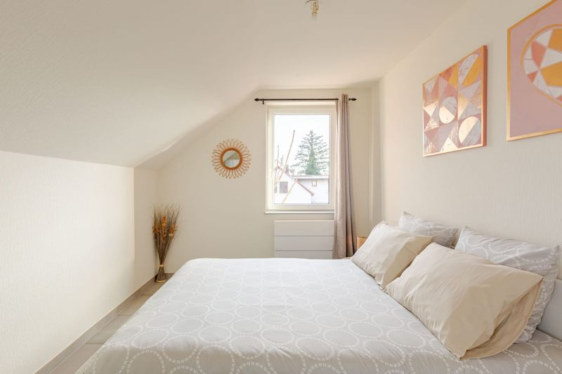
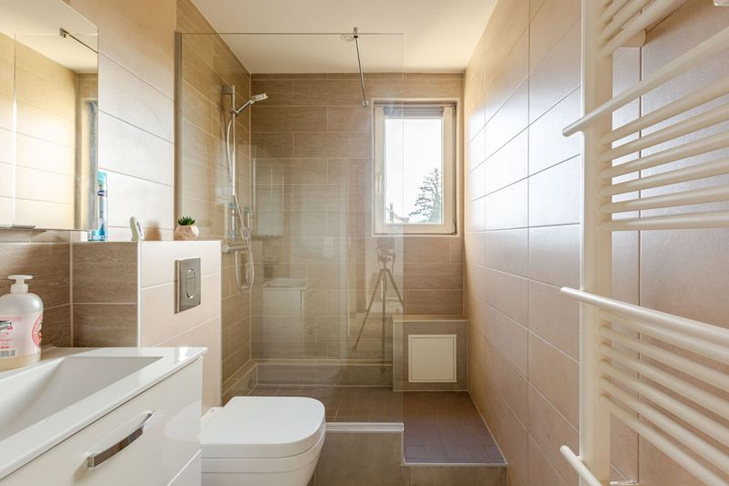
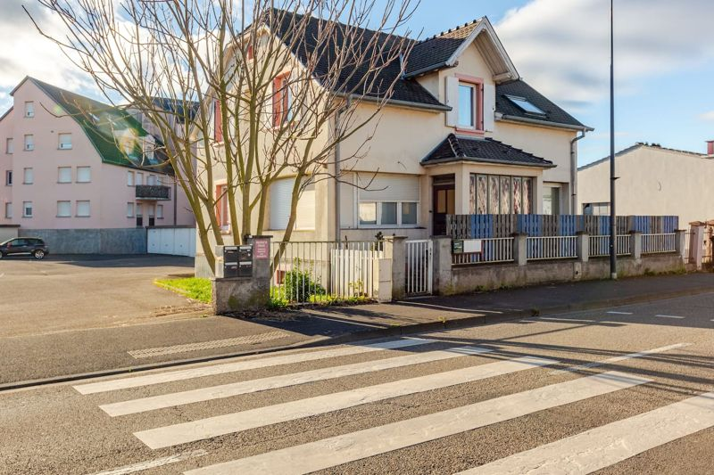
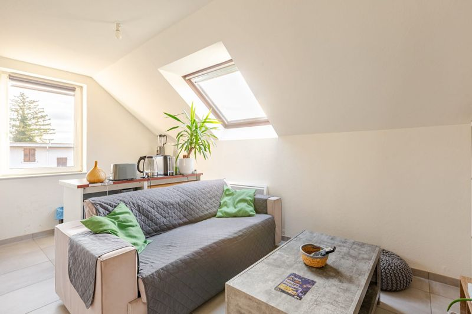
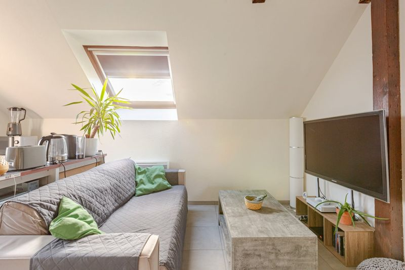
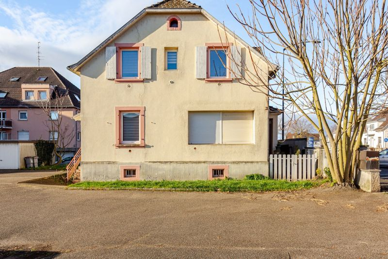
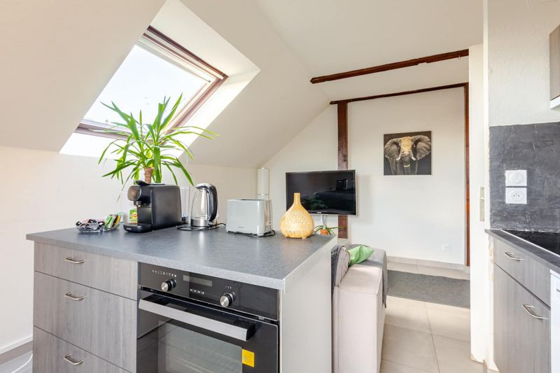
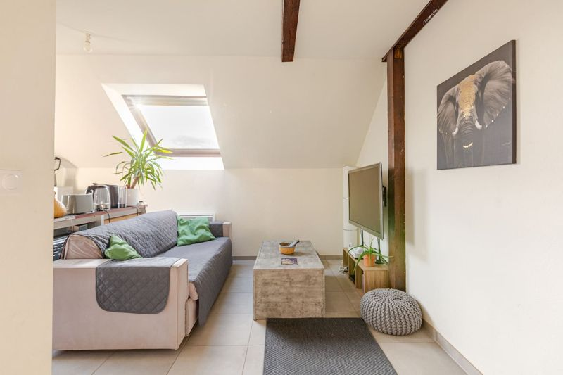
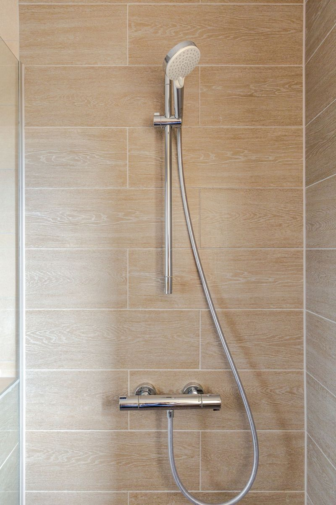
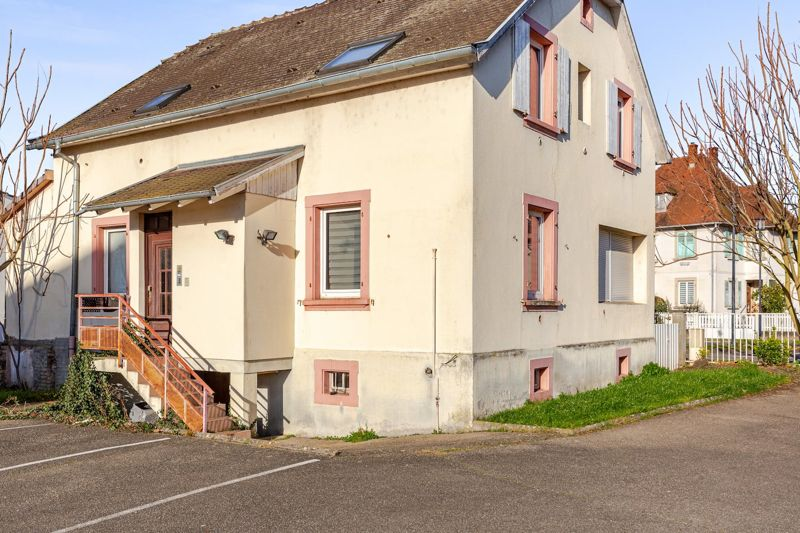

Appartement rénové · Erstein
Erstein — calme, gare et Europa-Park
Appartement rénové 40 m² dans une ville calme à 20 min de Strasbourg en train.
Le logement, en photos
Photos de l'annonce Airbnb · 12 vues











L'essentiel à savoir
Appartement rénové 40 m² dans une ville calme à 20 min de Strasbourg en train.
Centre d'Erstein : gare à 10 min à pied (Strasbourg à 20 min en train), Europa-Park à ~30 min en voiture, parking gratuit rue Henri-Dunant. L'adresse exacte est communiquée après la réservation.
Équipements
- Lit queen + canapé-lit
- Cuisine équipée, lave-vaisselle
- Wi-Fi fibre
- Arrivée autonome
- Parking gratuit dans la rue
- Animaux acceptés sur déclaration
À proximité
- Gare à 10 min à pied
- Strasbourg à 20 min en train
- Europa-Park à ~30 min en voiture
- Parking gratuit rue Henri-Dunant
Où ça se trouve
Centre d'Erstein
Centre d'Erstein : gare à 10 min à pied (Strasbourg à 20 min en train), Europa-Park à ~30 min en voiture, parking gratuit rue Henri-Dunant. L'adresse exacte est communiquée après la réservation.
Central Erstein: train station 10 min on foot (Strasbourg 20 min by train), Europa-Park ~30 min by car, free parking rue Henri-Dunant. Exact address shared after booking.
Questions fréquentes
Avant de réserver
Comment se passe l'arrivée ?
Arrivée 100 % autonome : serrure connectée Igloohome ou boîte à clés selon le logement. Les codes, photos et instructions sont envoyés avant l'arrivée.
Le linge est-il fourni ?
Oui : draps et serviettes fournis dans tous nos logements (1 serviette par voyageur).
Quelle est la politique d'annulation ?
Non remboursable moins de 30 jours avant l'arrivée. L'option « annulation prolongée » Airbnb (petit supplément) permet d'annuler gratuitement jusqu'à 24 h avant.
Peut-on fumer ?
Non, tous nos logements sont non-fumeurs à l'intérieur.
Erstein · dès 55 € la nuit